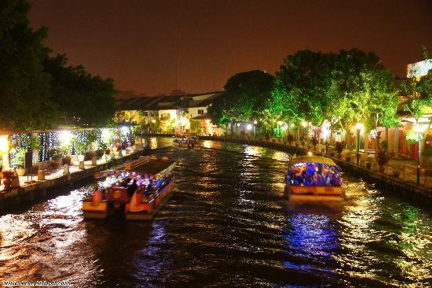
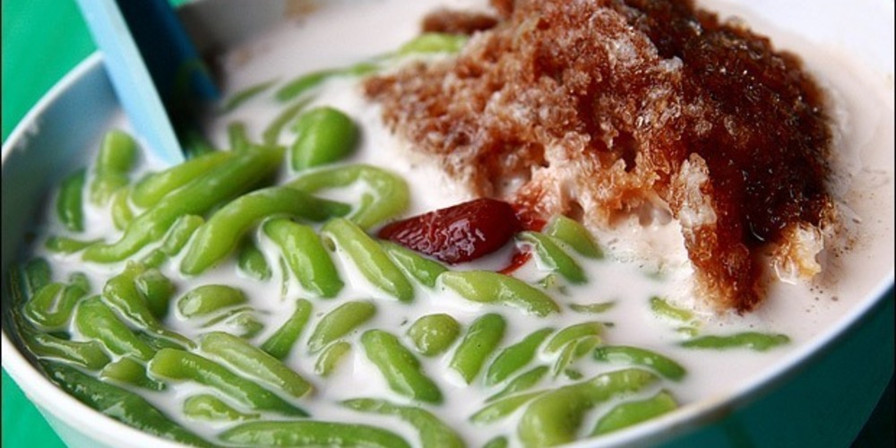
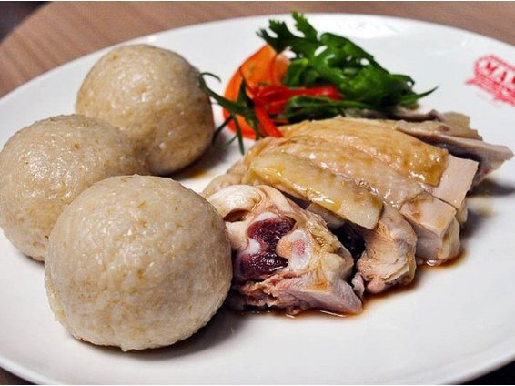

About Malacca
Malacca, dubbed "The Historic State", is a state in Malaysia located in the southern region of the Malay Peninsula, next to the Strait of Malacca. The state is bordered by Negeri Sembilan to the north and west and Johor to the south. The exclave of Cape Rachado also borders Negeri Sembilan to the north. Its capital is Malacca City, which is 148 kilometres (92 miles) south east of Malaysia's capital city Kuala Lumpur, 235 kilometres north west of Johor's largest city Johor Bahru, and 95 km north west of Johor's second largest city, Batu Pahat. This historical city centre has been listed as a UNESCO World Heritage Site since 7 July 2008. Although it was the location of one of the earliest Malay sultanates, the local monarchy was abolished when the Portuguese conquered it in 1511. The head of state is the Yang di-Pertua Negeri or Governor, rather than a Sultan.
Activities to Do
Malacca River Cruise
For a quick tour around the city at a leisurely pace, hop on the Melaka River Cruise. During the 45-minute ride, you will get to see the best bits of this historical city, offering sights such as the traditional Malay village Kampung Morten and the beautiful murals alongside Jonker Walk. To join the cruise, locate either one of cruise's two jetties: one is the Muara Jetty, located next to Quayside Heritage Centre, and the other one is the Taman Rempah Jetty, situated next to the Hang Jebat bridge.
Address: Jalan Laksamana, Malacca
Places of Interest + Food!
Jonker Street

Malacca is widely known for its harmonious blend of cultures as well as numerous historical sites, and Jonker Street (the main street of Chinatown) is the perfect place to see everything merge together. This central hub of activity also serves as a haven for antique collectors, bargain hunters, and vintage fashion enthusiasts. Whilst the main attraction of Jonker Street is its night market held every Friday and Saturday, we have found several well-preserved landmarks, some dating back to the 18th century, nestled amongst the street's more modern establishments. The diversity of Jonker Street's traditional and urban attractions is a testament of Malaysia's colourful history and rich multicultural society.
Food
* Gula Melaka Cendol
Origin from Indonesia, cendol has become the most-favoured ice dessert in Malaysia. Typically made from coconut milk, pandan flavour green rice noodles, shaved ice and palm sugar, the cendol is best to cool yourself down in a hot afternoon.
But in Malacca, the cendol are prepared by using gula melaka (a kind of locally made sugar) instead of palm sugar. This cendol is called Nyonya cendol. At Jonker 88, they serve a really thick gula melaka. With the coconut milk coatings, the cendol looks exactly a big scoop of vanilla ice-cream. They serve durian cendol as well. Go for it if you love durian.
* Chicken Rice Balls
A normal chicken rice would be chicken comes with a plate of rice. But here in Melaka, the rice is hand shaped into a ball, offering a twist in terms of texture.
Hoe Kee is always crowded for its authentic ping-pong size rice balls which is cooked by using the chicken stock. The Hainan chicken has a very distinctive taste compared to others. With slippery smooth skin, the meat is very tender and yet it comes with generous portion! At Shui Xian, the rice ball is firm and it won't fall apart when you pick it up. It looks like a big dumpling and the taste is just right! The mock chicken is made from bean curd sheets and it goes very well with the rice balls.
Address: Jonker Street Night Market, Jalan Hang Jebat, 75200 Malacca, Malaysia